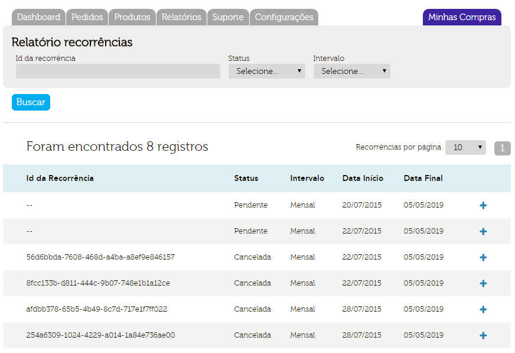
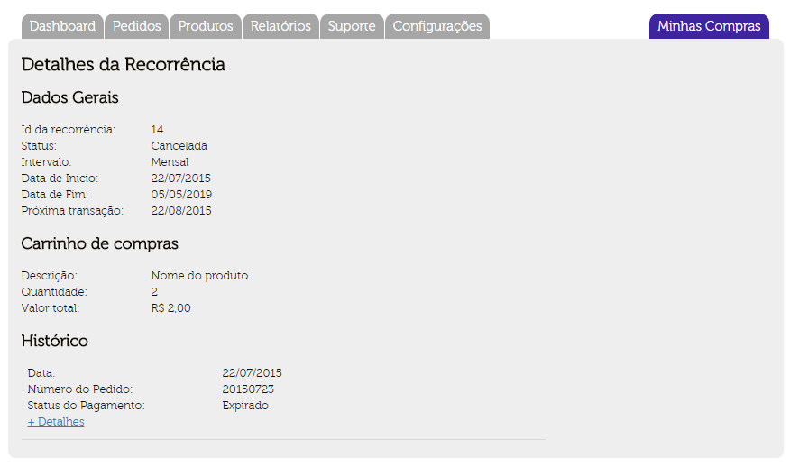
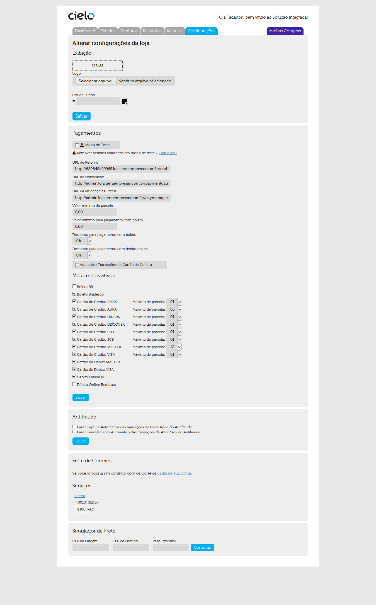

The purpose of this document is to guide the retailer during the sales with Checkout Cielo. Describing the features,
the methods to be used, listing necessary information and providing examples.
Overview
To access Cielo’s Checkout Backoffice, it is necessary that the retailer log in on Cielo website
by entering the Membership Information (Establishment Number.) and User:
Then you must include your password:
In the “Online Sales” simply click Cielo’s Checkout
If the Cielo’s main website is not available, simply visit the URL https://cieloecommerce.cielo.com.br/backoffice and enter your e-mail
registration and password.
Updates: Recurring button, the login screen, information about installments.
Inclusion of Recurrence’s report
1.4 - 21/07/2015
Inclusion of Recurrence in “payment methods”
1.3 - 28/01/2015
Update of automatic capture
Update of ORDERS information
Update Anti-fraud Minimum amount.
1.2 - 21/01/2015
Name Change - Cielo’s Checkout becomes integrated solution
1.1 - 16/12/2014
Update screens “Settings” and “My purchases”.
1.0 - 21/11/2014
Initial version
Cielo’s Backoffice Pages
The Backoffice is made up of 6 different pages of administration Cielo Checkout. They are:
DashBoard- Home Page where you will find out your account and on the volume and type of transactions
that your store has been conducting via Cielo’s Checkout
Orders - this page contains a list with all the transaction held for a certain period of time in Cielo’s Checkout.
In this page is possible to search for a particular request, through a particular search parameter in the existing fields and unchecking
the “checkbox” of “Payment Methods” or “Payment Status” and pressing the “Search” button.
Products - this page lists all registered products in Cielo’s Checkout. It is also possible to search by product name
on this page.The list of products can be exported in Excel format.
Reports - On this page you can generate 05 types of reports:
“Financial report”,
“Sales Detailed”,
“Customer List”,
“Billing Statement” and
“Recurrence Report”.
Manuals - This page contains the manuals Cielo’s Checkout, as well as the FAQ page and “Questions” where the retailer
can contact the Cielo’s Checkout support team.
Settings - Page where it is possible to make changes to the Store settings, their registration and change your
password data.
DashBoard
Homepage which presents information about your account and the volume and type of transactions that your store has been conducting via
Cielo’ Checkout.
Types of information
On this screen you will find two types of information.
• Alerts - Indicates whether there are applications to expire on this date.
• Financial and transactional volume - are interactive graphs that show a percentage (and totals) of the share of each
payment methods in all transactions carried out and the total volume according to transactions status.
Orders
This page contains the list with all the transaction held for a certain period of time in Cielo’s Checkout.
In this page is possible to search for a particular request, through a particular search parameter in the existing fields and
unchecking the “checkbox” of “Payment Methods” or “Payment Status” and pressing the “Search” button.
The search result is displayed in the form of an operations list.This list can be exported to excel.
Products
In this page are listed all registered products in Cielo’s Checkout. It is also possible to search by product name on this page.
The list of products can be exported in Excel format.
In Products menu, there are also two other areas: Products Register and Registrants Products List.
List Products Registered
By clicking on the Title or SKU product, you will be redirected to product information page, where all product characteristics are
reported and where you can set the default button (if your integration is based on the Cielo’s Checkout button) to used in the
sale of that product.The Integration via Button is best explained in item
Uso do botão Checkout Cielo “Comprar“.
Register products
In this page is possible to register their products based on the product type itself. The Cielo Checkout considers three kinds of products: Physical Material, Digital and Service.
• Physical Material - Physical products that need to be sent by retailers. Eg: clothing, toys, etc.
• Digital - Digital goods sold over the Internet.Eg: Software, Games, Music, etc.
• Services - Services to be provided. Eg: delivery, projects and budgets.
Reports
On this page you can generate 05 types of reports: “Financial report”, “sales Detailed”, “Customer List”, “Billing Statement” and
“Recurrence Report”.
Financial report
This report presents sales paid in a period of time, being separated by payment methods. Selecting the period and type of payment,
after pressing “Search”, the result will be displayed.
Detailed sales report
This report informs the value of each order as well as data about the product and the buyer.The report only shows data of the applications considered with “PAID” status.
Customers List
The customer list generate an excel file containing the data of customers who made purchases in your store.
THE DATA SUBMITTED ARE:
Name
E-mail
telephone
CPF
Address (as described by the client or as information returned by the CEP)
Number
Supplement (if any)
Neighborhood
City
state
Zip code
Billing statement
The list of the amount charged for the services offered by Cielo will be presented in this report. All data plans and transaction
costs will be charged here:
Recurrence report
In this report it can search the set of recurrence and their transactions based on their ID or Status/occurrence interval.

After clicking in the “+” you open the recurrence details screen:

The recurrence details inform the shopping cart and history of scheduled transactions. By clicking ’+ Details" the retailer is directed
to Order detail screen (see “ORDER” item)
Manuals
This page contains the manuals Cielo’s Checkout, as well as the FAQ page and “Questions” where the retailer can contact the Cielo’s
Checkout support team.
In this page it is possible to contact regarding Operating questions, techniques and Commercial and have access to technical documents
and Cielo’s Checkout support.
• Developer Guide - Contains procedures and Cielo’s Checkout integration guidelines to your website.
• Retailers Tutorial - Main source of information about using Cielo’s Checkout from the point of view of the Retailer
• FAQ - Frequently Asked Questions about the Cielo Checkout. It contains information on Commercial, Technical, Operational questions
and the Test mode.
Store Settings
This page is possible to make settings on different mechanisms within the Cielo’s Checkout. This area is divided into four different
parts: Display, Payments, Fraud, Post Office & Freight Services.
Exhibition
Here it is possible to change the logo of the payment’s methods available in your store and the background color of the website via
using the options box or by entering the code on the chosen color (Colors are in RGB pattern).
Payments
In this screen it is possible to change the settings for payment methods available in your store, defining them as active or not,
and set the URL’s return, notification and Status Change.

CREDIT CARDS AND INSTALLMENT
Simply check the card in the check box that you want to make available at the time of payment. To disable it, simply uncheck the
checkbox.
The installment is defined by card issuer. The retailer defines the number of maxim installments available for each card. The Cielo
Checkout allows up to 12 installments without interest.There is the option to set a minimum value of installment.
The value set makes regardless of the purchase price, the buyer can only make installment payments with value above the Minimum Value.
Example: If the minimum installment amount is $10.00, a purchase of $100.00 may be parcelled at 10x maximum, even if the store
setting, the payment in 12x is enabled.
MAIN CIELO CHECKOUT URLS
The URLs must be registered by the retailer himself in his Backoffice, in “settings Store Settings” tab.
• URL Return - At the end of the transaction, the customer may be redirected to the URL of return. By clicking in the “Back” button
on the sales receipt, the buyer will be directing for the URL’s return previously registered in the BackOffice.
• URL Notification- At the end of a transaction a post is sent with all thesale’s details to the URL’s Notification, previously
registered in the BackOffice.The Notification POST is sent only when the transaction is completed, whether there was a change of
transaction status.
• URL Status Change - When an application has changed their status, will be sending a post to the URL Status Change, previously
registered in the BackOffice.The POST status change does not contain the shopping cart data, only the identification of order data.
You can resend the POST of Change Status in each transaction in the Order Screen. Just click on the blue buttons marked in the image
below:
DISCOUNT FOR BOLETOS AND ONLINE DEBT
It is possible to offer discounts in boleto and online debt payment’s methods. This discount can be defined in two ways.
• Via Backoffice: Simply select the value (%) that the payment’s methods will offer.
• POST: it is possible to send the POST a parameter containing the discount (%) that the payment’s method will offer.
MINIMUM AMOUNT OF BOLETO
It is possible to set a minimum amount to present the boleto. There is no boleto available for purchases with lower amount in the
checkout screen.
ANTI FRAUD
Here it is possible to set the automation of the capture processes and cancellation amount that a transaction should have to be
analyzed.


{kind=link}